Sentiment classification of social-media text is one of the most studied tasks in applied natural language processing, and comparisons between classical machine-learning classifiers and neural networks on Twitter data are abundant. Such comparisons are more sensitive to evaluation practice than is usually acknowledged: a vocabulary fitted on the test data, a fixed decision threshold, a model selected on the split that is then reported, or accuracy quoted on a corpus in which one class holds 93 percent of the documents can each move a result by more than the difference between the methods being compared. The author’s 2022 undergraduate thesis compared naive Bayes, logistic regression, a support vector machine, a random forest and gradient-boosted trees on two Twitter corpora and exhibited every one of these weaknesses.
This thesis re-implements that study as a benchmark under one evaluation protocol and extends it in three directions. Eight model families (multinomial naive Bayes, logistic regression, a calibrated linear support vector machine, random forest, XGBoost, a soft-voting ensemble, a convolutional neural network and a bidirectional LSTM) are evaluated across five input representations (count and TF-IDF \(n\)-grams, mean-pooled Word2Vec, Doc2Vec and token sequences) on three corpora: racist and sexist tweet detection (31,962 tweets, 7 percent positive), COVID-19 vaccine tweets with lexicon-derived labels (10,353 tweets, three classes) and the IMDB movie-review corpus (50,000 reviews, balanced). Every one of the 56 cells of this grid follows the same procedure: representations are fitted on cross-validation training folds only, out-of-fold probabilities determine the decision threshold and the selected model, and the held-out test split is scored exactly once.
The results separate two things that fixed-threshold comparisons conflate. On the hate-speech corpus all eight families rank the test tweets almost equally well (ROC-AUC 0.939 to 0.952), while F1 on the positive class spans 0.608 to 0.684 because of calibration and threshold transfer; tuning the threshold on out-of-fold predictions is worth up to 0.09 F1 for the classical models and 0.14 for the networks, and the class-weighted networks, although best by cross-validated F1, are the least calibrated and transfer their threshold worst. On the vaccine corpus the CNN reaches macro F1 0.812 against 0.775 for the best classical model. On IMDB, linear models on TF-IDF (F1 0.884 to 0.888, accuracy 0.882 to 0.885) are the ceiling of the grid, matching published results for models without pretrained language representations, and networks trained from scratch do not reach them. Learned document embeddings are the weakest representation on every corpus. Against the 2022 study, the ranking of the classical models survives and their absolute numbers do not.
The benchmark is delivered as a maintained system: configuration-defined experiments, experiment tracking, exported pipelines with model cards and monitoring baselines, a prediction service over a relational store, population-stability drift monitoring, continuous integration and infrastructure definitions for cloud deployment. Every number and figure in this document is regenerated from saved probabilities with one command. The final chapter sets out the research programme that follows from these results in 2026: pretrained and large language models as upper references and as annotators, cross-validation bagging and conformal prediction for calibrated decisions, human annotation to replace lexicon labels, fairness auditing of hate-speech classifiers, and drift-triggered retraining.
Keywords: sentiment analysis, hate speech detection, text classification, evaluation methodology, data leakage, threshold selection, calibration, reproducibility, MLOps.
I thank Prof. Zheng Yu, who supervised the 2022 thesis from which this work grew, for the freedom to pursue an evaluation-centred question, and the College of International Students of Nanjing University of Information Science and Technology for the education that made it possible. The datasets used here were collected and released by others, as credited in Chapter 3; the study would not exist without their work. All code, results and mistakes in this document are my own.
Sentiment analysis, also called opinion mining, is the computational treatment of the subjective content of text: whether a review recommends a product, whether a tweet expresses approval of a vaccine, whether a message is abusive [1, 2]. Social-media platforms turned it from a niche of computational linguistics into a routine industrial need, and Twitter in particular became the standard test bed: short, informal, noisy documents, produced at a rate no human team can read, about every topic of public interest. Academic and applied work on the topic now spans two decades and several technological generations, from lexicon look-ups through bag-of-words classifiers and distributed word representations to pretrained transformers and, since 2022, large language models that classify sentiment from a natural-language instruction without any task-specific training.
With each generation came a wave of comparison studies. A typical one takes one or two corpora, a handful of classifiers, and reports a table of accuracies. The author’s undergraduate thesis [3], completed at Nanjing University of Information Science and Technology in May 2022, was such a study: a survey of sentiment analysis and deep learning approaches followed by two experiments, racist and sexist tweet detection and COVID-19 vaccine sentiment, in which naive Bayes, logistic regression, a support vector machine, a random forest and XGBoost were compared in Jupyter notebooks. Its conclusion that naive Bayes classified the hate corpus with 94 percent accuracy was, as Chapter 6 shows, an artefact of the way the experiment was evaluated rather than a property of the classifier.
The problem this thesis addresses is methodological before it is algorithmic. Four evaluation choices, all common and all present in the 2022 study, each introduce errors of the same order as the differences between methods that such studies rank:
Leakage through feature fitting. Fitting a vocabulary, an IDF weighting or an embedding model on the union of training and test documents lets information about the test set into the representation [25]. The effect is subtle for count features and large for learned embeddings.
Selection on the reported split. Choosing the model, the representation or a hyper-parameter on the same data that is then reported as the result overstates that result [26].
Accuracy under imbalance. On a corpus in which 93 percent of the documents belong to one class, a classifier that never predicts the other class is 93 percent accurate. Accuracy says almost nothing about the minority class that is usually the point of the task.
Fixed decision thresholds. Probabilistic classifiers are compared at a threshold of 0.5, or at a value chosen once by hand. The F1-optimal threshold depends on the classifier and on the class prior [27], and modern networks are systematically over-confident [30], so a fixed threshold measures calibration as much as it measures discrimination.
A second problem is practical. A study that lives in notebooks cannot be re-run, extended or deployed; its numbers cannot be regenerated when a library changes; and its models, if they were ever worth using, have no path to use. Machine-learning systems accumulate operational debt in precisely this way [35].
The thesis has four objectives.
To define one evaluation protocol that removes the four sources of error above, and to apply it without exception to every combination of corpus, representation and model in the study.
To extend the 2022 comparison with the neural models it proposed as future work, a soft-voting ensemble, and a third corpus of long, balanced documents, so that the conclusions can be tested across text length and class balance.
To analyse the results in a way that separates the ranking ability of a classifier from the calibration of its scores and the transfer of its decision threshold, and to quantify what each evaluation choice is worth.
To deliver the benchmark as a reproducible and operable system, in which every reported number is regenerated from saved predictions, every run is tracked, the selected models are documented and served, and their behaviour in production is monitored.
A 56-cell benchmark (three corpora, five representations, eight model families) under a single leakage-free protocol: representations fitted per cross-validation fold and shared by all models on that fold, decision thresholds chosen on out-of-fold predictions, model selection by cross-validated F1, and one scoring pass on a held-out split.
The finding that, on the imbalanced hate-speech task, all eight families lie within 0.013 ROC-AUC of each other while their positive-class F1 spans 0.076, and that this spread is explained by calibration and threshold transfer: threshold tuning is worth up to 0.09 F1 for classical models and 0.14 for networks, and the model with the best cross-validated F1 transfers its threshold worst.
Evidence across three corpora that sparse \(n\)-gram representations remain the strongest input for classical learners on short text, that learned document embeddings are the weakest representation everywhere, and that on balanced long documents linear models on TF-IDF match networks trained from scratch at a hundredth of the training cost.
A quantified comparison with the original study, showing that its ranking of the classical models survives a rigorous protocol while its absolute numbers, including the headline 94 percent, do not.
A reference implementation: configuration-defined experiments, a feature cache that guarantees identical inputs across models, experiment tracking, model cards, a prediction service over PostgreSQL, population-stability drift monitoring, continuous integration against a real database, container images and infrastructure definitions for a public cloud, with no credential or dataset location in the code and no data in the repository.
A research programme for 2026 (Chapter 8) that follows from the evidence: pretrained and large language models as upper references and as annotators, cross-validation bagging and conformal prediction for calibrated decisions, human annotation for the vaccine corpus, fairness auditing of hate-speech classifiers, and drift-triggered retraining.
The study is deliberately restricted to models that can be trained from scratch on a laptop CPU in minutes. Pretrained transformers and large language models are discussed as related work and as future work and are used to bound the remaining gap on IMDB, but they are not part of the grid; the question the grid answers is what careful evaluation does to the comparison that applied studies most often make. English text only is considered. The vaccine corpus has no human labels and is evaluated against a lexicon labeller, as in the original study; the consequences are discussed wherever that corpus is used.
Chapter 2 reviews sentiment analysis, the classifiers and representations used, the methodology literature on leakage, selection, thresholds and calibration, and the state of the field in 2026. Chapter 3 describes the three corpora. Chapter 4 defines the normalisation, representations, models and evaluation protocol, with the metrics stated formally. Chapter 5 describes the system that implements the benchmark and operates its models. Chapter 6 presents the experiments and their analysis. Chapter 7 interprets the results and states the threats to their validity. Chapter 8 concludes and sets out future work. The appendices contain the full results table, reproduction instructions and a model card.
Sentiment analysis determines the orientation of an opinion expressed in text. Three levels of granularity are usually distinguished [2]: document level, where a whole review or tweet receives one label; sentence level; and aspect level, where the opinion about each attribute of an entity is extracted. This thesis works at document level, with two or three classes. The surveys of Pang and Lee [1] and Liu [2] cover the field up to the era of supervised bag-of-words classifiers; the 2022 thesis [3] surveyed the subsequent deep-learning approaches in detail, and that survey is not repeated here. Instead this chapter concentrates on the components actually used in the benchmark and on the methodological literature that motivates the protocol.
Three families of approach coexist. Lexicon-based methods score a document by the polarity of the words it contains, from hand-built dictionaries or from lexicons induced from corpora; TextBlob [34], used here to label the vaccine corpus, belongs to this family and returns a polarity in \([-1, 1]\) from an adjective lexicon with rules for negation and intensifiers. Supervised methods learn a classifier from labelled documents and dominate both research and practice. Distant or weak supervision sits between the two: Go et al. [4] labelled tweets by the emoticons they contained and trained supervised classifiers on the result; labelling the vaccine corpus by lexicon polarity is the same idea with a different noisy oracle, and it inherits the same limitation, namely that a classifier trained on such labels learns the oracle.
Racist and sexist tweet detection was established as a task by Waseem and Hovy [5], whose corpus of about 17,000 tweets annotated for racism and sexism showed that character \(n\)-grams and simple demographic features gave strong baselines, and by Davidson et al. [6], who separated hate speech from merely offensive language and documented the confusion between the two. Both corpora are heavily imbalanced, and both papers report F1 on the minority class as the metric of interest. Subsequent work has shown that hate-speech classifiers can encode racial bias through dialect [7], a concern taken up in Chapter 8.
The bag-of-words model represents a document by the counts of its terms over a fixed vocabulary; TF-IDF reweights each count by the inverse document frequency of the term, down-weighting terms that appear in most documents. With unigrams and bigrams these representations remain remarkably competitive: Wang and Manning [12] showed that a naive-Bayes-weighted linear model over bigram features matched or beat far more complex models on sentiment corpora including IMDB, a result the present study reproduces in spirit (Chapter 6).
Word2Vec [14] learns a dense vector per word such that words occurring in similar contexts receive similar vectors, using either the continuous bag-of-words or the skip-gram objective with negative sampling; a document can be represented by the mean of its word vectors. Doc2Vec [15] extends the idea with a paragraph vector that is trained jointly with the word vectors and inferred for unseen documents by gradient descent. Both were central to the 2022 thesis, which found Word2Vec features to give its best XGBoost result. Pretrained contextual representations [18] supersede both in accuracy at a much higher computational cost and are discussed in Section 2.6.
models the term counts of a document as draws from a class-conditional multinomial distribution [8]. Its independence assumption is false for text and its probability estimates are poorly calibrated, yet its decision rule is strong, it trains in milliseconds, and it is the classical baseline for text.
fits a linear decision function by maximising the regularised conditional log-likelihood; its outputs are probabilities, and with L2 regularisation it is among the best-calibrated linear classifiers [29].
fit the maximum-margin hyperplane [9] and are the classical choice for high-dimensional sparse text. They output margins, not probabilities; Platt scaling [28] fits a sigmoid to the margins on held-out data to obtain calibrated probabilities, which is what allows an SVM to take part in threshold tuning on equal terms with probabilistic models.
[10] average many decision trees grown on bootstrap samples with random feature subsets; they are robust and need little tuning but are comparatively slow on wide sparse matrices.
fit trees sequentially to the residuals of the ensemble so far; XGBoost [11] adds regularisation, sparsity-aware splits and a histogram algorithm that make it practical on large sparse inputs. It was the best model of the 2022 thesis on Word2Vec features.
average the predicted probabilities of heterogeneous members. They are cheap when the members are cheap and often improve calibration as well as accuracy.
Kim [16] showed that a single convolutional layer over word embeddings with several kernel widths, global max pooling and dropout is a strong sentence classifier. The architecture extracts local \(n\)-gram-like features and is fast to train.
The long short-term memory cell [17] allows a recurrent network to carry information across long spans; read in both directions and pooled over time it gives a document representation that captures order, which the CNN largely ignores. Both neural architectures were proposed as future work in the 2022 thesis.
Kaufman et al. [25] define leakage as the use of information in model training that would not be available at prediction time, and catalogue its forms; fitting preprocessing on the full data before splitting is the most common form in applied work. The remedy is to place every fitted transformation inside the cross-validation loop, which is the first rule of the protocol in Chapter 4.
Cawley and Talbot [26] showed that selecting among many models or hyper-parameters on the evaluation data biases the reported score upward, and that the bias grows with the number of alternatives; with 56 cells the effect would be far from negligible. Nested evaluation, in which selection uses cross-validation on the training data and reporting uses a separate test split scored once, removes it.
Lipton et al. [27] proved that the threshold which maximises F1 is not 0.5 in general but depends on the classifier’s score distribution and on the class prior; for a calibrated classifier the optimal threshold is half the optimal F1. Choosing the threshold on out-of-fold predictions, never on the test split, is therefore both necessary and cheap.
A classifier is calibrated if among documents scored \(p\) a fraction \(p\) are positive. Niculescu-Mizil and Caruana [29] compared the calibration of classical learners and the effect of Platt scaling and isotonic regression; Guo et al. [30] showed that modern neural networks are systematically over-confident. Reliability diagrams make the property visible, and the present results show that it, rather than discrimination, separates the model families on the imbalanced task.
Davis and Goadrich [31] showed that precision-recall curves are more informative than ROC curves when the positive class is rare, because ROC is insensitive to the number of false positives relative to a large negative class. Both are reported here, with average precision as the summary of the former.
Sculley et al. [35] described the hidden technical debt of machine-learning systems: entanglement, undeclared consumers, data dependencies, configuration debt and the absence of monitoring. Mitchell et al. [36] proposed model cards as a documentation standard recording what a model was trained on, how it was evaluated and where it should not be used. Experiment tracking tools such as MLflow [37] record parameters, metrics and artifacts per run. Drift monitoring in production borrows the population stability index from credit scoring [38], a symmetric divergence between a baseline and a current histogram. Chapter 5 applies each of these to the benchmark.
Three developments since the 2022 thesis change the context of the work without changing its question.
First, pretrained transformer encoders [18, 19] fine-tuned on a few thousand labelled examples are the accuracy ceiling on every corpus used here: on IMDB they exceed 95 percent accuracy against the 88 to 91 percent of models without pretraining [13, 12]. Parameter-efficient fine-tuning [20] has made this affordable on modest hardware.
Second, large language models classify sentiment from an instruction alone [21], and have been used as annotators: Gilardi et al. [22] found that an instruction-following model matched or exceeded crowd workers on several text-annotation tasks at a fraction of the cost, and Zhang et al. [23] surveyed sentiment analysis in the era of large language models, finding strong zero-shot performance on simple polarity tasks and weaker results on fine-grained and structured ones. For a corpus like the vaccine tweets, whose only labels come from a lexicon, this offers a cheaper path to human-quality labels than annotation campaigns, with its own validation burden.
Third, the evaluation questions at the centre of this thesis have become more important, not less. Large models are frequently evaluated on benchmarks that overlap their training data, a leakage problem at corpus scale; their probability outputs are at least as poorly calibrated as those of the networks studied here; and their operating cost makes the accuracy-versus-cost trade-off that Chapter 6 makes explicit the central engineering decision. Conformal prediction [24] has emerged as a distribution-free way to turn any classifier’s scores into sets with guaranteed coverage, a principled replacement for a single tuned threshold. These developments define the future work in Chapter 8.
Three corpora are used (Table 1). The first two are those of the 2022 thesis; the third was added so that every conclusion could be tested on long, balanced documents as well as on short, imbalanced ones.
| Corpus | Documents | Classes and balance | Labels | Split |
|---|---|---|---|---|
| Hate (Twitter) | 31,962 | 2: not hate 92.99 percent, hate 7.01 percent | human (competition) | stratified 80/20 |
| Vaccine (Twitter) | 10,353 | 3: negative 9.9, neutral 56.6, positive 33.5 percent | TextBlob polarity sign | stratified 80/20 |
| IMDB | 50,000 | 2: balanced | human (star ratings) | official 25k/25k |
The corpus is the training file of the Analytics Vidhya practice
problem Twitter Sentiment Analysis: 31,962 tweets with a binary
label, 1 for tweets judged racist or sexist and 0 otherwise. There are
2,242 positives (7.01 percent). User handles are anonymised to
@user in the source and the text retains hashtags, emoji
rendered as mojibake, and the informal spelling of the platform. The
competition’s unlabelled test file (17,197 tweets) was used by the 2022
thesis for leaderboard submissions and is not used here; all evaluation
is on a stratified 80/20 holdout of the labelled file (seed 42), giving
25,569 training and 6,393 test tweets with 1,794 and 448 positives
respectively.
The labels are human and were produced for the competition; no annotation guidelines are published, and the corpus mixes overt slurs with political tweets labelled by their hashtags, which is the principal reason why the ceiling of every model family on this task is far below that on the other two.
The corpus is the Pfizer Vaccine Tweets dataset released on Kaggle by G. Preda: 11,020 tweets collected from December 2020 onward with the hashtags of the Pfizer and BioNTech vaccine, together with user metadata that this study discards. No human sentiment labels exist. As in the 2022 thesis, each tweet is lightly cleaned (URLs, handles and hash symbols removed, stop words dropped), exact duplicates are removed (10,353 unique tweets remain), and the label is the sign of the TextBlob [34] polarity: negative (polarity below zero, 1,025 tweets, 9.9 percent), neutral (exactly zero, 5,859 tweets, 56.6 percent) and positive (above zero, 3,469 tweets, 33.5 percent). The large neutral class is a property of the labeller: a tweet with no word in the adjective lexicon scores exactly zero.
This is weak supervision in the sense of Section 2.4: a classifier trained on these labels is trained to reproduce TextBlob, and its scores measure agreement with the lexicon rather than with human judgement. The corpus is kept because it is half of the original study and because it isolates an interesting effect, the interaction between a lexicon-defined target and different representations, which Chapter 6 discusses. Replacing the labels is the first item of future work.
The Large Movie Review Dataset of Maas et al. [13] contains 50,000 reviews from the Internet Movie Database, balanced between negative (star rating at most 4) and positive (at least 7), with an official split of 25,000 training and 25,000 test reviews and at most 30 reviews per film. Reviews average about 230 words before cleaning, ten to twenty times the length of a tweet. The official split is used unchanged; the training split is used for cross-validation.
No corpus is redistributed with the code. The loaders expect the files in a local data directory; download locations for the public sources are read from the environment, not written in the code; and a manifest records the SHA-256 hash, row count and class balance of the files used for a run, together with a content fingerprint of the loaded frame that is copied into every model card. Continuous integration runs the whole pipeline on a deterministic synthetic corpus generated in code, so that the repository can prove it works without containing any data. Each corpus retains its original licence and terms of use.
This chapter defines every component of the benchmark precisely enough to be re-implemented: the text normalisation, the five representations, the eight model families with their settings, and the evaluation protocol with its metrics. All settings are stored in a single configuration file per grid and logged with every run.
One transformer implements the normalisation recipe of the 2022 thesis and is the first step of every exported pipeline, so that training, evaluation and serving apply exactly the same cleaning. In order: HTML entities are unescaped and tags removed; text is lower-cased; URLs and @-handles are removed; characters other than letters (and, optionally, the hash symbol) are replaced by spaces; tokens shorter than a minimum length are dropped; tokens in the scikit-learn English stop-word list are dropped; and the Porter stemmer is applied. The hate corpus keeps hashtags as tokens and uses a minimum length of three characters, because hashtags carry label information in that corpus; the vaccine and IMDB corpora drop the hash symbol and keep two-character tokens. The transformer is stateless, which is what allows it to live inside the model pipeline without being refitted.
Let \(D = \{d_1, \dots, d_n\}\) be the cleaned documents of a training fold. Five representations are evaluated.
A vocabulary \(V\) of unigrams and bigrams is built from \(D\), keeping terms that occur in at least 2 documents and at most 90 percent of them, truncated to the \(|V|\) most frequent (\(|V| = 5{,}000\) for tweets, \(20{,}000\) for reviews). Document \(d\) is the vector of term counts \(x_{d,t}\), \(t \in V\).
The same vocabulary with weights \(w_{d,t} = (1 + \log x_{d,t})\cdot \log\frac{1+n}{1+\mathrm{df}(t)} + 1\) (sublinear term frequency, smoothed inverse document frequency), followed by L2 normalisation of each document vector.
A skip-gram model with negative sampling [14] is trained on \(D\) (dimension 200, window 5, 10 negative samples, minimum count 2, 20 epochs on tweets and 8 on reviews). A document is represented by the mean of the vectors of its in-vocabulary tokens; a document with no in-vocabulary token receives the zero vector.
A distributed-memory model with mean context [15] (dimension 200, window 5, 7 negative samples, minimum count 5, 15 epochs) is trained on \(D\). Both training and test documents are embedded by inference (20 epochs of gradient descent on the paragraph vector), so that the two are represented by the same procedure; using the training-time paragraph vectors for training documents and inferred vectors for test documents, as the 2022 notebooks did, gives the two sets different distributions.
For the neural models a vocabulary of the most frequent tokens of \(D\) is built inside the estimator (at most 20,000 tokens for tweets, 30,000 for reviews, plus padding and unknown symbols); a document is the sequence of its token indices, truncated or padded to 48 positions for tweets, 200 for the CNN and 160 for the BiLSTM on reviews. The embedding layer is initialised from a Word2Vec model trained on \(D\) (dimension 128, 10 epochs) and fine-tuned with the network.
Every representation is fitted on \(D\) only. Within cross-validation, \(D\) is the training part of a fold; for the final model, \(D\) is the whole training split.
Eight model families are evaluated. Classical models use scikit-learn [32] and XGBoost [11]; the neural models are implemented in PyTorch [33] and wrapped as scikit-learn estimators so that they pass through the same cross-validation, threshold selection, tracking and export as the classical models.
[8] with additive smoothing \(\alpha = 0.5\). Because its parameters are term probabilities it is evaluated on count and TF-IDF features only.
with L2 regularisation, \(C = 1\) on tweets and \(C = 2\) on reviews, class weights inversely proportional to class frequency on the Twitter corpora, L-BFGS optimisation.
with \(C = 0.5\) and balanced class weights, wrapped in Platt scaling [28] with three internal folds so that it exposes probabilities.
[10] with 400 trees (300 on reviews) and balanced-subsample class weights.
[11] with the histogram tree method, depth 6, minimum child weight 2, column subsampling 0.5, row subsampling 0.9, and 500 rounds at learning rate 0.05 on tweets or 400 rounds at 0.1 on reviews. The 2022 thesis tuned depth 8, minimum child weight 6, \(\eta = 0.1\) and \(\gamma = 1.2\) on Word2Vec features by staged grid search; those settings under-fit sparse \(n\)-gram matrices (test F1 0.52 to 0.53 against 0.60 to 0.62 with the settings above on the hate corpus) and are retained in the configuration for reference only.
of the logistic regression, the calibrated SVM and XGBoost with equal weights, predicting the mean of the members’ probabilities.
following Kim [16]: 128-dimensional embeddings, parallel convolutions of width 3, 4 and 5 with 128 filters each, rectified linear activation, global max pooling over time, concatenation, dropout 0.5, and a linear output layer.
[17]: the same embeddings, a bidirectional LSTM with 128 units per direction (64 on reviews), concatenation of max pooling and mean pooling over time, dropout 0.5, and a linear output layer.
Both networks minimise the cross-entropy with Adam (learning rate \(10^{-3}\), batch size 64, gradient-norm clipping at 5), with class weights inversely proportional to class frequency on the Twitter corpora, and stop early on the loss of a 10 percent validation slice of the training fold (patience 2, at most 8 epochs on tweets; patience 1, at most 4 and 3 epochs on reviews). Seeds are fixed for the split, the folds, Gensim and PyTorch; Gensim’s multithreaded training introduces run-to-run variation of the order of \(10^{-3}\) in F1 for the embedding-based cells.
Let \(y_i \in \{0, 1\}\) be the label and \(\hat{p}_i\) the predicted probability of the positive class for document \(i\), and \(\hat{y}_i(\tau) = \mathbb{1}[\hat{p}_i \ge \tau]\) the decision at threshold \(\tau\). With \(\mathrm{TP}\), \(\mathrm{FP}\), \(\mathrm{FN}\) the counts of true positives, false positives and false negatives at \(\tau\), \[\begin{equation} \mathrm{P}(\tau) = \frac{\mathrm{TP}}{\mathrm{TP}+\mathrm{FP}}, \qquad \mathrm{R}(\tau) = \frac{\mathrm{TP}}{\mathrm{TP}+\mathrm{FN}}, \qquad \mathrm{F}_1(\tau) = \frac{2\,\mathrm{P}(\tau)\,\mathrm{R}(\tau)}{\mathrm{P}(\tau)+\mathrm{R}(\tau)}. \end{equation}\] ROC-AUC is the area under the curve of true-positive rate against false-positive rate over all \(\tau\), equal to the probability that a random positive is scored above a random negative; average precision (PR-AUC) is the area under the precision-recall curve [31]. For the three-class corpus the decision is the arg-max, F1 is the unweighted mean of the per-class F1 (macro F1), and ROC-AUC is the macro average of one-versus-rest areas. Accuracy is reported everywhere but is the primary metric only on the balanced IMDB corpus.
The same procedure is applied to every cell (corpus, representation, model):
Split. The corpus is divided once into a training split and a held-out test split (stratified 80/20 with seed 42 for the Twitter corpora; the official split for IMDB). The test split is not touched until step 5.
Feature cache. The training split is cleaned once. For each fold of a stratified \(k\)-fold partition (\(k = 5\) on tweets, 3 on reviews) each representation is fitted on the fold’s training part and applied to its validation part; each representation is also fitted on the whole training split and applied to the test split. The resulting matrices are cached and shared by every model evaluated on that representation, so that models are compared on identical inputs and no representation ever sees validation or test documents during fitting.
Out-of-fold probabilities. Each model is trained on each fold’s training matrix and scores the fold’s validation matrix, giving one out-of-fold probability per training document.
Threshold and selection. For binary corpora the threshold is \[\begin{equation} \tau^\ast = \arg\max_{\tau \in \{0.05, 0.06, \dots, 0.95\}} \mathrm{F}_1^{\mathrm{oof}}(\tau), \end{equation}\] computed on the out-of-fold probabilities [27]. The cross-validated F1 of the cell is \(\mathrm{F}_1^{\mathrm{oof}}(\tau^\ast)\); its standard deviation across folds is recorded. The selected cell per corpus is the one with the highest cross-validated F1. The test split plays no part in any of this [26].
Test. The model is refitted on the whole training split and scores the test split once at \(\tau^\ast\): accuracy, precision, recall, F1, ROC-AUC, average precision, per-class scores and the confusion matrix are recorded, together with F1 at the default threshold of 0.5 and the training time.
Persistence. Out-of-fold and test probabilities are saved, so that every figure and table can be regenerated without retraining.
Step 2 removes leakage [25] and, by sharing matrices, makes the comparison between models exact and the benchmark several times cheaper. Step 4 removes selection bias [26] and replaces the fixed threshold of 0.3 used in the 2022 notebooks by a value that is optimal for each model. Step 5 scores the test split exactly once, so that the test numbers are an unbiased estimate of what the selected procedure would achieve on new data from the same distribution. The price of this rigour is that a model whose probability scale shifts between the fold models and the refitted model transfers its threshold imperfectly; Chapter 6 measures that price.
The reliability diagram bins test documents by predicted probability into quantile bins and plots the mean predicted probability of each bin against the observed positive rate; a calibrated model lies on the diagonal. For monitoring, the population stability index between a baseline histogram \(e\) and a current histogram \(a\) over the same bins is \[\begin{equation} \mathrm{PSI}(e, a) = \sum_b (a_b - e_b)\,\ln\frac{a_b}{e_b}, \end{equation}\] with the usual warning level at 0.1 and alert at 0.25 [38]; it is applied to the token-length distribution of inputs and to the distribution of predicted classes, alongside the out-of-vocabulary rate against the training vocabulary.
The protocol of Chapter 4 is only as good as its implementation, and a result that cannot be regenerated is not a result. This chapter describes the system that runs the benchmark, tracks it, exports its models and operates them. Figure 1 gives the overview; the implementation is public and is the reference for every detail omitted here.
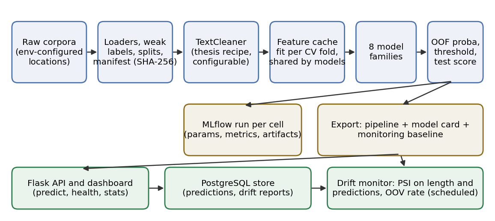
Four principles governed the design.
Configuration, not code, defines an experiment. One YAML file lists the corpora and their cleaning settings, the representations and their parameters, the models and their hyper-parameters, the grid of model-to-representation pairs, the number of folds and the seed. The file is logged with every run, so any results table can be traced to the exact grid that produced it.
One pipeline object from text to decision. Cleaning, representation and model are composed into a single scikit-learn pipeline. The object that is evaluated is the object that is exported and served; there is no second implementation of the cleaning for production.
Nothing sensitive or heavy in the repository. Dataset locations, database connection strings and API tokens are read from the environment; raw corpora, trained weights, probability dumps and tracking stores are ignored by version control. A deterministic synthetic corpus generated in code lets the test suite and continuous integration exercise every code path without data.
Regenerable outputs. Saved probabilities feed a report command that rebuilds every figure, the results tables and the tables of this document; the model cards carry the data fingerprint, configuration path, software versions and commit.
Each corpus has a loader that returns a frame with exactly two columns, text and integer label, validates it (no empty texts, at least two classes), and exposes its label names and task type. The vaccine loader performs the lexicon labelling and caches the result next to the raw file. A manifest records the SHA-256 hash, row count and class balance of the raw files.
A cache object cleans the training split once, fits each representation per fold and on the full split on demand, and hands the matrices to every model evaluated on that representation. For the hate corpus this reduces the number of Word2Vec and Doc2Vec fits from 24 to 6 each and makes the inputs to different models identical.
Classical models are scikit-learn estimators. The PyTorch networks
are wrapped in a class with the estimator interface (fit,
predict_proba, predict, parameter
introspection) and custom pickling that serialises the network state, so
that they cross-validate, export and reload exactly like the classical
models.
The orchestrator runs the protocol of Section 4.4 for every cell, writes the out-of-fold and test probabilities to disk, computes metrics and per-class reports, draws the confusion matrix, and appends a row to the results table. Results of separate runs (for example the IMDB grid run on its own) merge into the same table by corpus.
Each cell is one MLflow [37] run with its parameters, cross-validated and test metrics, threshold, timings and confusion matrix; an extra run per corpus logs the exported pipeline as an artifact. The store is a local SQLite database by default and any tracking server otherwise. Every run is also appended to a line-delimited JSON log, which a replay command can push into a store later, so that a run completed without a tracking server is never lost.
The selected pipeline per corpus is serialised together with a model card [36] in JSON (corpus, task, class names, model and representation, threshold, selection rule, all metrics, per-class scores, parameters, cleaning settings, training rows, data fingerprint, configuration path, commit, package version, interpreter version, timestamp) and a monitoring baseline (token-length histogram, training vocabulary, predicted-class distribution on the training data). Appendix C reproduces one card.
A Flask application loads the exported pipelines and exposes a
dashboard (model cards, results table and figures),
POST /api/predict for a single text or a batch of up to
200, and GET /health, /api/models and
/api/stats. Every prediction is written, with its model,
confidence and latency, to a relational store through SQLAlchemy; the
store is PostgreSQL in the container stack and on the cloud and SQLite
on a laptop, selected by one environment variable. The container image
runs the application under a production WSGI server with a health
check.
A monitor command compares a batch of recent inputs, read either from a CSV file or from the last \(h\) hours of traffic in the store, with the training baseline: the population stability index of the token-length distribution and of the predicted-class distribution, the out-of-vocabulary rate against the training vocabulary, and the share of inputs that become empty after cleaning. Each statistic has warning and alert levels; the report is stored with its timestamp, and the command exits with a non-zero status on alert so that it can gate an automated pipeline. On the cloud it runs daily as a scheduled task against production traffic.
The test suite (44 tests) covers the cleaner, every representation, every model family including pickling of the networks, the metrics and threshold search, the drift statistics, the prediction store against both SQLite and PostgreSQL, the Flask routes, and an end-to-end run of the smoke benchmark on the synthetic corpus with export and figure generation. Continuous integration runs linting, the suite against a PostgreSQL service, the smoke benchmark and a container build on every change, on two Python versions. Infrastructure definitions provision, on a public cloud, a container registry, a serverless container service behind an application load balancer with HTTPS and CPU-based autoscaling, a managed PostgreSQL instance, an encrypted and versioned object store for artifacts and model bundles, secrets injected from a parameter store, centralised logs and the scheduled drift task; a release workflow builds the image, pushes it and rolls the service with automatic rollback on failed health checks, using short-lived federated credentials rather than stored keys.
A reader with the three corpora can reproduce every number in this thesis from the public repository with the commands in Appendix B. Without the corpora, the same commands run the whole pipeline on the synthetic corpus in about one minute, which is what continuous integration does. The paper and this thesis are generated from the same results table by scripts, so that no number in either document is typed by hand.
All results were produced on a laptop CPU (eight cores, no accelerator) with pinned package versions (scikit-learn 1.5, XGBoost 2.0, Gensim 4.4, PyTorch 2.13). The Twitter grid comprises 22 cells per corpus: naive Bayes on counts and TF-IDF; logistic regression, the SVM, the forest and XGBoost on all four classical representations; the ensemble on TF-IDF and Word2Vec; the CNN and BiLSTM on sequences. The IMDB grid is reduced to 12 cells for cost: no Doc2Vec, the forest and the SVM on TF-IDF only, 3-fold cross-validation and shorter network schedules. The whole study runs in about two hours. Appendix A lists every cell.
| Dataset | Task | Train | Test | Model / features | CV F1 | Test F1 | Acc. | Prec. | Rec. | ROC-AUC | Thr. |
|---|---|---|---|---|---|---|---|---|---|---|---|
| Hate | binary | 25569 | 6393 | CNN / sequence | 0.672 ± 0.022 | 0.608 | 0.955 | 0.782 | 0.498 | 0.948 | 0.90 |
| Vaccine | multiclass | 8282 | 2071 | CNN / sequence | 0.799 ± 0.012 | 0.812 | 0.859 | 0.798 | 0.830 | 0.948 | argmax |
| IMDB | binary | 25000 | 25000 | Linear SVM (calib.) / TF-IDF | 0.893 ± 0.002 | 0.884 | 0.882 | 0.870 | 0.898 | 0.953 | 0.50 |
Table 2 gives the cell selected per corpus by cross-validated F1 and its test scores. On both Twitter corpora the CNN is selected; on IMDB the calibrated linear SVM on TF-IDF, by 0.001 of cross-validated F1 over logistic regression. The per-class scores of these three models are in Table 3.
| Dataset | Class | Support | Prec. | Rec. | F1 |
|---|---|---|---|---|---|
| Hate | not hate | 5945 | 0.963 | 0.990 | 0.976 |
| hate | 448 | 0.782 | 0.498 | 0.608 | |
| Vaccine | negative | 205 | 0.639 | 0.741 | 0.686 |
| neutral | 1172 | 0.930 | 0.861 | 0.894 | |
| positive | 694 | 0.825 | 0.889 | 0.856 | |
| IMDB | negative | 12500 | 0.895 | 0.866 | 0.880 |
| positive | 12500 | 0.870 | 0.898 | 0.884 |
| Model | Hate | Vaccine | IMDB | ||||||
|---|---|---|---|---|---|---|---|---|---|
| Naive Bayes |
|
|
|
||||||
| Logistic regression |
|
|
|
||||||
| Linear SVM (calib.) |
|
|
|
||||||
| Random forest |
|
|
|
||||||
| XGBoost |
|
|
|
||||||
| Soft-voting ensemble |
|
|
|
||||||
| CNN |
|
|
|
||||||
| BiLSTM |
|
|
|
Table 4 shows every family at its best representation. Three patterns are visible before any analysis: the families are close on the hate corpus (test F1 0.608 to 0.684) and on IMDB (0.842 to 0.888) and further apart on the vaccine corpus (0.698 to 0.812); the CNN is the best family on both Twitter corpora by cross-validated F1 but not by test F1 on the hate corpus; and the fold standard deviations are 0.01 to 0.02 on the Twitter corpora and 0.002 on IMDB, which sets the resolution at which differences can be read.
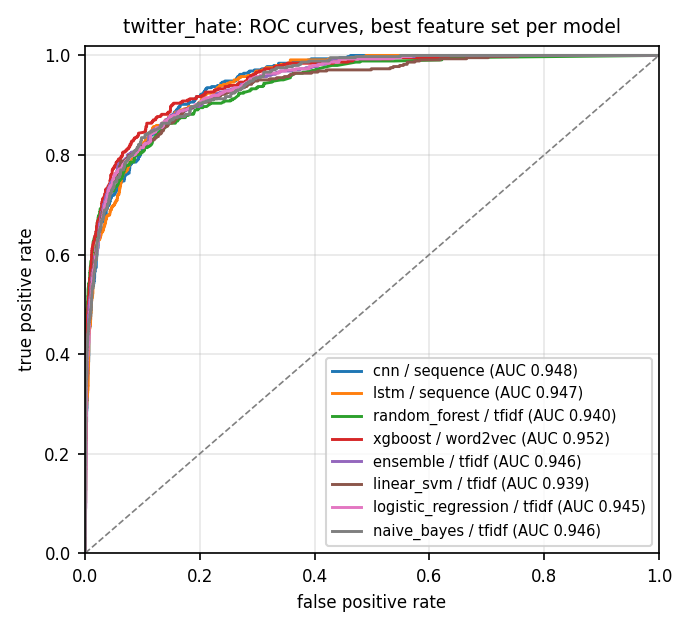
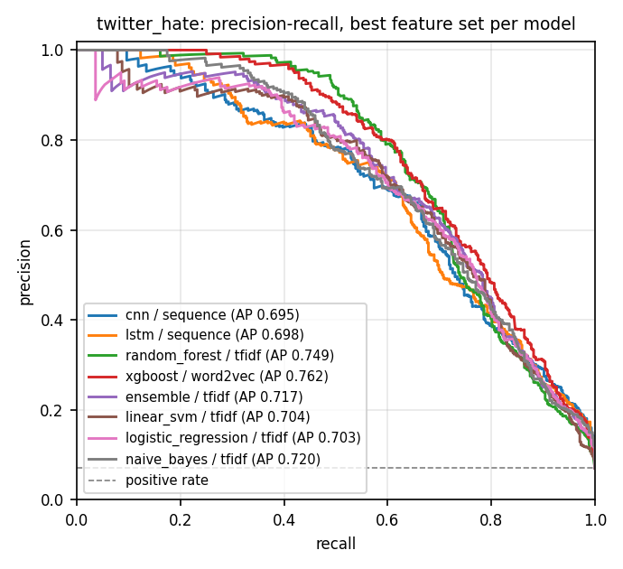
Figures 2 and 3 show the ROC and precision-recall curves of the best cell per family on the hate corpus. Every family reaches a test ROC-AUC between 0.939 (calibrated SVM) and 0.952 (XGBoost on Word2Vec), and average precision between 0.695 and 0.762; the eight families order the test tweets almost equally well. Their F1 on the positive class, however, spans 0.608 to 0.684 (Table 4), and the spread is explained by calibration and threshold transfer rather than by ranking.
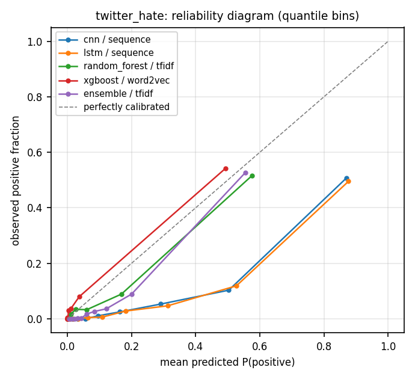
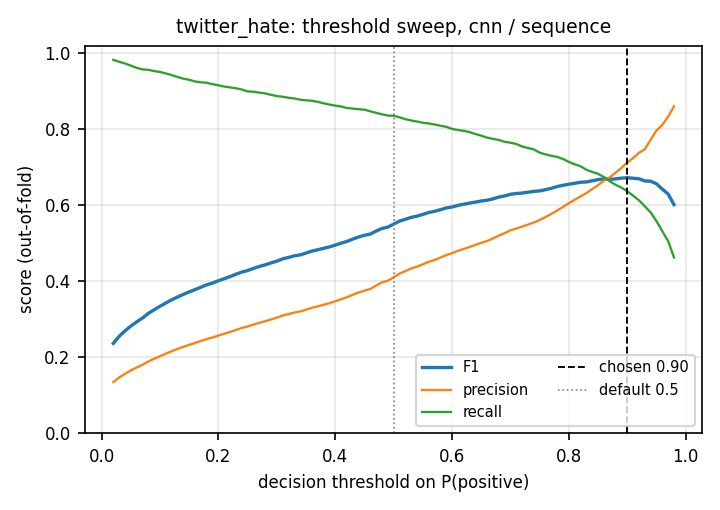
Figure 4 shows why. The class-weighted networks are strongly over-confident: in the top decile of predicted probability the CNN predicts 0.87 on average where the observed positive rate is 0.51. The calibrated SVM, the forest, XGBoost and the ensemble lie close to the diagonal. Accordingly the networks’ F1-optimal thresholds are 0.85 (BiLSTM) and 0.90 (CNN, Figure 5), while the classical models’ lie between 0.23 and 0.69.
| Model | Feat. | Thr. | F1 tuned | F1 at 0.5 | Gain | CV minus test |
|---|---|---|---|---|---|---|
| CNN | sequence | 0.90 | 0.608 | 0.515 | +0.093 | +0.064 |
| BiLSTM | sequence | 0.85 | 0.658 | 0.514 | +0.144 | +0.013 |
| RF | TF-IDF | 0.40 | 0.680 | 0.685 | -0.005 | -0.010 |
| XGB | Word2Vec | 0.23 | 0.684 | 0.661 | +0.023 | -0.020 |
| Ens. | TF-IDF | 0.38 | 0.662 | 0.654 | +0.008 | -0.002 |
| SVM | TF-IDF | 0.32 | 0.654 | 0.615 | +0.039 | -0.001 |
| LR | TF-IDF | 0.69 | 0.654 | 0.586 | +0.068 | -0.002 |
| NB | TF-IDF | 0.24 | 0.658 | 0.571 | +0.087 | -0.008 |
Table 5 quantifies both effects. Threshold tuning. Choosing the threshold on out-of-fold predictions improves test F1 over the default of 0.5 for seven of the eight families: by 0.008 to 0.087 for the classical models (logistic regression on TF-IDF rises from 0.586 to 0.654) and by 0.093 and 0.144 for the CNN and BiLSTM; the random forest, whose optimum lies at 0.40, loses 0.005. The fixed threshold of 0.3 used in the 2022 notebooks would have been close to optimal for naive Bayes and XGBoost and far from it for logistic regression (optimum 0.69) and the networks. Threshold transfer. The threshold is chosen on probabilities of models trained on four fifths of the training split and applied to a model refitted on all of it. For the calibrated SVM, logistic regression, the ensemble, the forest and XGBoost the transferred threshold reproduces the cross-validated F1 within 0.02; for the CNN it costs 0.064 (cross-validated 0.672, test 0.608) and for the BiLSTM 0.013. Early stopping ends the refitted network at a different epoch from the fold models, and an over-confident score scale shifts with it. The CNN nevertheless remains the model selected by the protocol, because selection uses cross-validated F1 only; the outcome is reported rather than overridden, and the remedy, averaging the fold models instead of refitting, is discussed in Chapter 8.
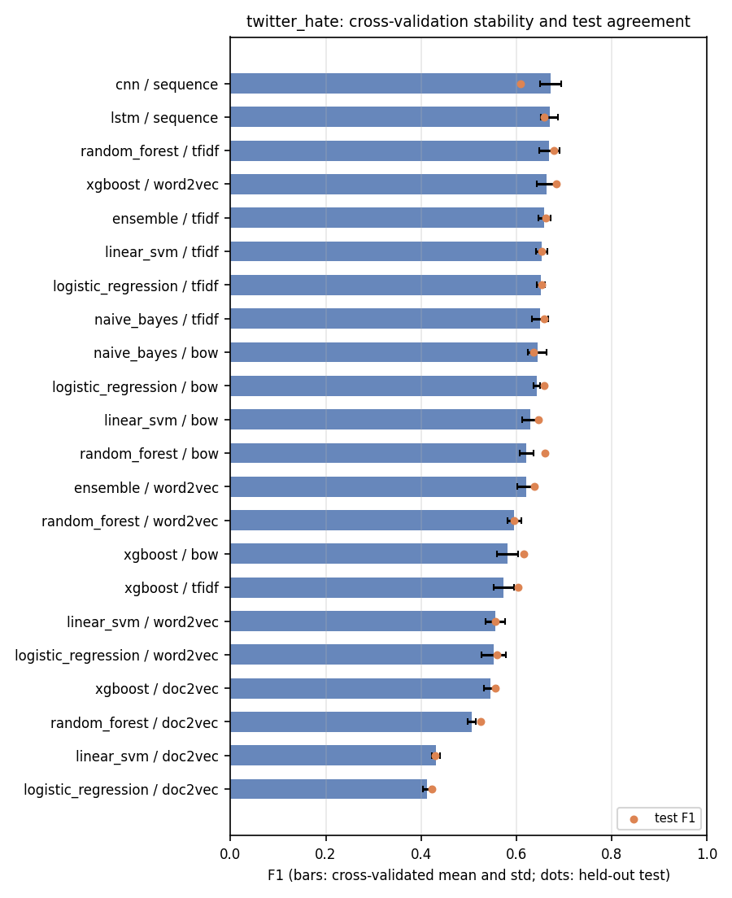
Figure 6 places the differences in context. Fold standard deviations are 0.01 to 0.02, so the top eight cells (cross-validated F1 0.650 to 0.672) are statistically indistinguishable on this corpus, and a claim that a network beats a linear model here would not survive the confidence intervals. At its tuned threshold the selected CNN trades recall (0.498) for precision (0.782) on the 448 positive test tweets (Table 3).
| Features | Hate | Vaccine | IMDB |
|---|---|---|---|
| counts | 0.636 (NB) | 0.775 (LR) | 0.856 (LR) |
| TF-IDF | 0.680 (RF) | 0.757 (Ens.) | 0.884 (SVM) |
| Word2Vec | 0.684 (XGB) | 0.552 (LR) | 0.846 (XGB) |
| Doc2Vec | 0.557 (XGB) | 0.475 (LR) | n/a |
| sequence | 0.608 (CNN) | 0.812 (CNN) | 0.876 (BiLSTM) |
Table 6 gives the best model per representation and corpus, and Figure 7 the full model-by-representation grid on the hate corpus. Sparse \(n\)-gram features are the strongest input for classical learners on all three corpora: TF-IDF or counts give the best cell for every model except XGBoost, which reaches its best hate-speech score (0.684) on mean-pooled Word2Vec. Doc2Vec is the weakest representation for every model on both Twitter corpora (test F1 0.42 to 0.56 on hate, 0.42 to 0.48 on vaccine): with documents of ten to twenty tokens, inferred paragraph vectors carry little beyond noise, and linear models on them fall below naive Bayes on counts. Mean-pooled Word2Vec sits between the two; it helps the tree models, which can exploit interactions between embedding dimensions, and hurts the linear ones.
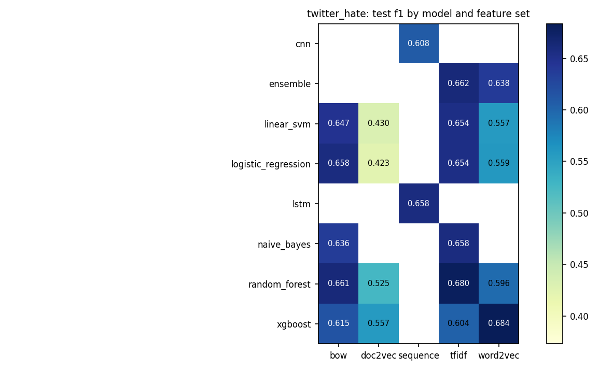
On the vaccine corpus the gap is largest: embedding features reach 0.42 to 0.55 macro F1 against 0.70 to 0.78 for \(n\)-gram models. The explanation is the labeller: TextBlob responds to the presence of specific adjectives, which a count vector preserves exactly and a mean of word vectors blurs. This is the clearest illustration in the study of how a weak-supervision target shapes which representations appear to work.
The CNN is clearly ahead on the three-class task: macro F1 0.812 (cross-validated 0.799 \(\pm\) 0.012, accuracy 0.859) against 0.775 for logistic regression on counts, 0.757 for the TF-IDF ensemble and for XGBoost on counts, and 0.779 for the BiLSTM. Table 3 shows the minority negative class (205 test tweets) at F1 0.686 with recall 0.741, the neutral majority at 0.894 and positive at 0.856; Figure 8 gives the confusion matrix and Figure 9 the one-versus-rest ROC curves. Because the target is the sign of a lexicon polarity, a model that captures short patterns around lexicon words, negation and intensifiers among them, reproduces the labeller better than a bag of words can. These numbers should be read as agreement with TextBlob, not as accuracy against human judgement.
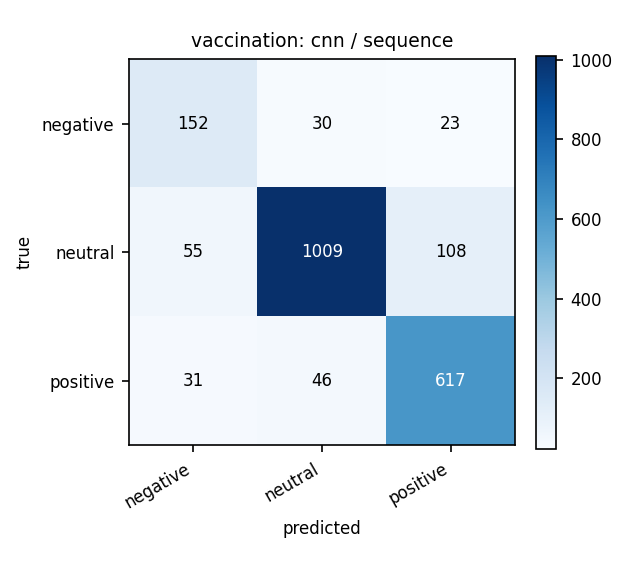
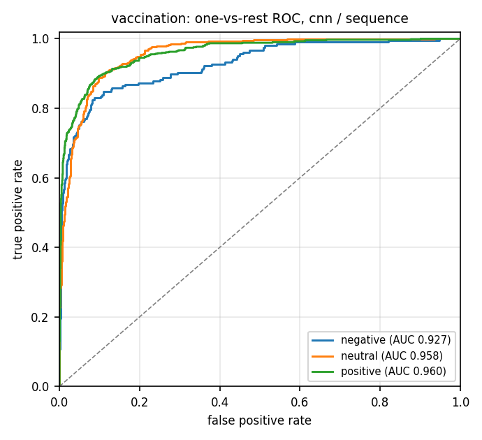
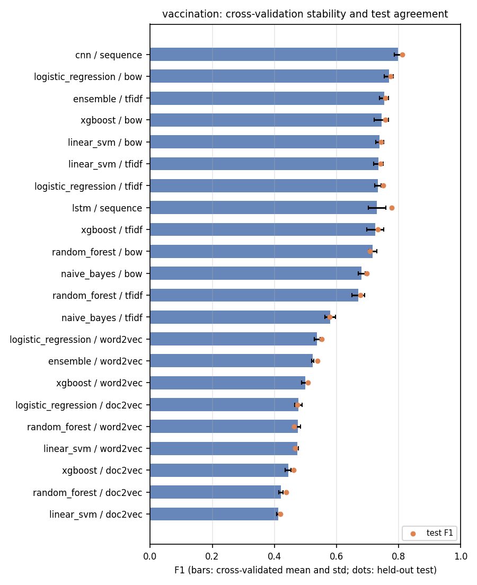
On balanced, long documents the picture inverts. Logistic regression (F1 0.886, accuracy 0.885), the calibrated SVM (0.884, 0.882) and their ensemble with XGBoost (0.888, 0.885) on 20,000 TF-IDF terms are within 0.004 of each other with fold standard deviations of 0.002; the BiLSTM (0.876) and the CNN (0.875) trained from scratch do not reach them, and the tree models trail by 0.02 to 0.03. The tuned thresholds of the best cells lie at 0.45 to 0.50, so thresholding is immaterial on this task; Figure 10 shows the precision-recall curves and the CV-versus-test agreement. Accuracies of 88.2 to 88.5 percent agree with the 88.9 percent reported by Maas et al. [13] for their learned word vectors with a linear classifier, sit below the 91.2 percent of NB-SVM over bigrams [12], and well below the 95 percent and above of fine-tuned transformers [18]. This locates the grid precisely: it is the ceiling of models that train from scratch on a CPU in minutes.
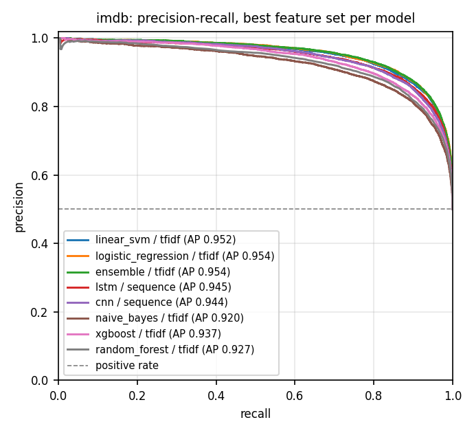
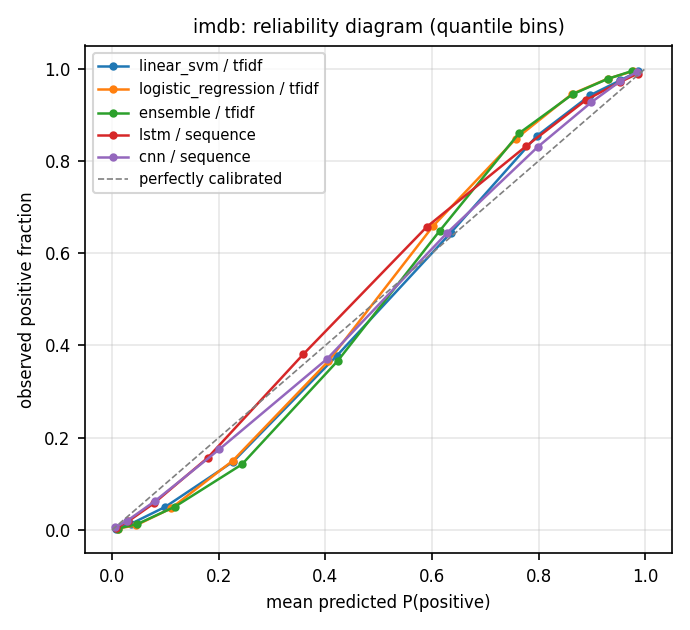
| Model | Hate | IMDB | ||
| F1 | s | F1 | s | |
| Naive Bayes | 0.658 | 0.1 | 0.851 | 0.1 |
| Logistic regression | 0.654 | 0.1 | 0.886 | 0.1 |
| Linear SVM (calib.) | 0.654 | 0.2 | 0.884 | 0.3 |
| Random forest | 0.680 | 5.0 | 0.859 | 9.6 |
| XGBoost | 0.684 | 9.0 | 0.865 | 53.9 |
| Soft-voting ensemble | 0.662 | 3.2 | 0.888 | 45.1 |
| CNN | 0.608 | 22.7 | 0.875 | 86.4 |
| BiLSTM | 0.658 | 29.3 | 0.876 | 81.7 |
Table 7 reports the time to fit the best cell per family on the full training split, and Figure 11 plots test F1 against that time on the hate corpus. The linear models train in well under a second on tweets and in under a second on reviews; the forest and XGBoost in seconds to tens of seconds; the networks in 20 to 30 seconds on tweets and 80 to 90 seconds on reviews. On the hate corpus the resulting differences in F1 are within one to two fold standard deviations; on IMDB the cheapest models are also the most accurate. Whether the 0.04 to 0.05 macro-F1 advantage of the CNN on the vaccine corpus is worth a hundredfold increase in training time and an uncalibrated score scale is an application decision that the benchmark makes explicit rather than hides.
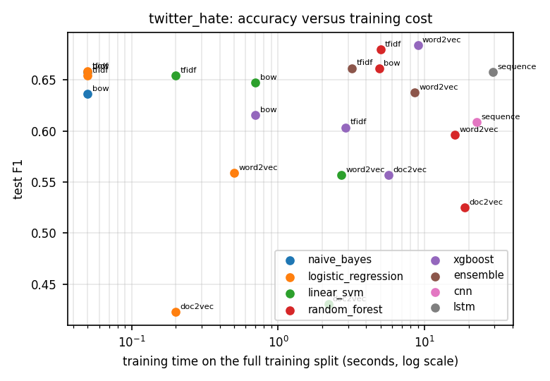
| Model | Features | 2022 notebook F1 | 2026 protocol test F1 |
|---|---|---|---|
| Logistic regression | counts | 0.530 | 0.658 |
| Logistic regression | TF-IDF | 0.545 | 0.654 |
| Logistic regression | Word2Vec | 0.614 | 0.559 |
| Logistic regression | Doc2Vec | 0.386 | 0.423 |
| Linear SVM (calib.) | counts | 0.510 | 0.647 |
| Linear SVM (calib.) | TF-IDF | 0.511 | 0.654 |
| Linear SVM (calib.) | Word2Vec | 0.613 | 0.557 |
| Linear SVM (calib.) | Doc2Vec | 0.198 | 0.430 |
| Random forest | counts | 0.553 | 0.661 |
| Random forest | TF-IDF | 0.562 | 0.680 |
| Random forest | Word2Vec | 0.511 | 0.596 |
| Random forest | Doc2Vec | 0.065 | 0.525 |
| XGBoost | counts | 0.513 | 0.615 |
| XGBoost | TF-IDF | 0.519 | 0.604 |
| XGBoost | Word2Vec | 0.658 | 0.684 |
| XGBoost | Doc2Vec | 0.365 | 0.557 |
Table 8 sets the numbers of the 2022 notebooks against those of the present protocol for the sixteen cells the two have in common. The 2022 numbers are validation F1 at a fixed threshold of 0.3 on a single split, with vectorizers and embeddings fitted on training and test documents together; the 2026 numbers are test F1 at the out-of-fold tuned threshold with representations fitted per fold. Fourteen of the sixteen cells improve, by 0.03 to 0.46, and the improvement is largest exactly where the old protocol was weakest: on Doc2Vec, where training-time paragraph vectors for training documents and inferred vectors for test documents gave the two sets different distributions, and on the linear models over \(n\)-grams, where the threshold of 0.3 was far from optimal. The two exceptions are logistic regression and the SVM on Word2Vec, which score 0.055 lower under the present protocol (0.614 to 0.559 and 0.613 to 0.557): in 2022 the embedding was trained on the test documents as well, so every test tweet was in-sample for the representation, which is precisely the leakage the protocol removes. The ranking of the representations is preserved (Word2Vec or \(n\)-grams first, Doc2Vec last) and so, broadly, is the ranking of the models. The headline of the 2022 study, 94 percent accuracy for naive Bayes, was the majority-class rate of a 93/7 split inflated by leakage; under the present protocol naive Bayes reaches F1 0.658 at an accuracy of 0.954, which is mostly that same majority rate. The conclusion is that the original study ranked its methods approximately right and measured them wrong.
Eight model families spanning five decades of machine learning, from naive Bayes to a bidirectional LSTM, rank hate-speech tweets within 0.013 ROC-AUC of one another. What separates them in F1 is the calibration of their scores and whether a threshold chosen on fold models survives refitting. A study that compares such models at a fixed threshold is mostly comparing calibration, and a study that reports accuracy on a 93/7 corpus is mostly reporting the class prior.
On the hate corpus the out-of-fold threshold is worth up to 0.087 F1 for classical models and 0.144 for the networks, more than the gap between the best and the median family. A comparison that does not tune thresholds per model is not comparing the models’ best operating points.
The CNN was selected on the hate corpus by cross-validated F1 and then scored 0.064 below its cross-validated mean on the test split, where calibrated classical models scored within 0.02 of theirs. The protocol reports this honestly instead of selecting on the test split, which would have produced a higher number and a biased one. The mechanism, an over-confident score scale that moves with early stopping, is identified and has a known remedy.
The ordering of representations is stable (sparse \(n\)-grams first, Doc2Vec last), but the size of the gaps depends on how the labels were made: on the lexicon-labelled vaccine corpus, where the target is a function of specific words, count features beat embeddings by 0.2 macro F1. Benchmarks that use weak labels should say so, because they measure the representations’ ability to reconstruct the labeller.
On short documents the networks and tree ensembles are nominally ahead; on long balanced reviews the linear models on TF-IDF are the ceiling of the grid and the networks trained from scratch do not reach them. Only pretraining changes this picture, at a cost that is two orders of magnitude higher.
Its ranking of the classical models survives; its absolute numbers do not, and its headline number was an artefact. That is probably true of a large share of applied comparison studies, which is the strongest argument for protocols like the one defined here.
The vaccine corpus is labelled by a lexicon; its scores measure agreement with TextBlob, not sentiment as a human would judge it. The hate corpus has human labels from a competition without published guidelines, and mixes overt abuse with political content labelled by hashtag; its ceiling reflects label noise as much as model limits. IMDB has clean human labels derived from ratings.
Test scores come from one stratified holdout per Twitter corpus and from the official IMDB split. Cross-validated means and fold standard deviations are reported alongside, and no claim in this thesis rests on a difference smaller than one fold standard deviation. Thresholds are chosen on fold models and applied to refitted ones; the cost of that transfer is measured, not assumed away. Hyper-parameters were set once from common practice rather than searched per cell; a per-cell search would raise most scores a little and would require a second level of nesting to remain unbiased.
Both Twitter corpora date from 2016 to 2021; vocabulary, hashtags and platform norms have moved since, and a model trained on them would drift, which is what the released monitor measures. The grid excludes pretrained language models, so its conclusions concern models trained from scratch; the IMDB comparison with published results bounds the gap. Only English is considered.
All code, configuration and figures are public; corpora are obtained from their original sources. Seeds are fixed, but Gensim’s multithreaded training makes the embedding-based cells reproducible only to about \(10^{-3}\) in F1, and PyTorch on different hardware may differ at the same order. Timings are from one laptop.
Three habits would have prevented every defect of the 2022 study and cost nothing: put every fitted transformation inside the cross-validation loop; never select on the split you report; and tune the threshold on out-of-fold predictions while reporting precision-recall alongside ROC. A fourth habit, keeping the experiment in configuration and the outputs regenerable, turns a one-off comparison into an asset that can be re-run when a library, a corpus or a question changes. The system described in Chapter 5 is one implementation of those habits; the habits matter more than the implementation.
This thesis took a notebook comparison of five classifiers on two Twitter corpora and re-built it as a 56-cell benchmark under one leakage-free protocol, with three corpora, five representations and eight model families, delivered as a system that tracks its runs, documents and serves its models and monitors them in production. The protocol changed the conclusions more than the new models did. On short imbalanced text all families rank documents almost equally well, and the differences that fixed-threshold comparisons report are differences in calibration and threshold handling; tuning the threshold out-of-fold is worth up to 0.14 F1 and the least calibrated models transfer it worst. Sparse \(n\)-gram features remain the representation of choice for classical learners, learned document embeddings are the weakest choice everywhere, and on balanced long documents linear models on TF-IDF match networks trained from scratch at a hundredth of the cost. The original study’s ranking survives this scrutiny; its numbers do not.
Every number in this document is regenerated from saved predictions by the public code, and the selected models can be served and monitored from the same repository. That, more than any individual result, is what the 2022 study lacked.
The results and the state of the field in 2026 (Section 2.6) define a research programme. The items are ordered by how directly they follow from the evidence and by cost.
The one clear defect the protocol exposed is threshold transfer for over-confident models. The direct remedy is to serve the average of the \(k\) fold models rather than a model refitted on all the data: the served probabilities are then on the same scale as the out-of-fold probabilities on which the threshold was chosen, at the cost of \(k\) times the inference. A second remedy is post-hoc calibration of the refitted model on the out-of-fold predictions (temperature scaling for the networks, isotonic regression for the trees). Both are cheap experiments on the saved probabilities and should be the first extension. Beyond a single threshold, conformal prediction [24] turns any classifier’s scores into prediction sets with a guaranteed coverage rate on exchangeable data; for a moderation setting, where the cost of a missed positive differs from that of a false alarm, sets with guaranteed recall are a more honest interface than a point decision at a tuned threshold.
Fine-tuned transformer encoders [18, 19] should be added to the grid as a reference family, with the same protocol: the threshold chosen out-of-fold, the test split scored once. Parameter-efficient fine-tuning [20] makes this feasible on a single GPU within the hour, and the calibration analysis of Chapter 6 predicts that such models will need temperature scaling before their thresholds transfer. The value of the experiment is not the higher number, which is known, but the measurement of how much of the gap to the linear models is closed on the hate corpus, where label noise may cap every model, against IMDB, where the literature suggests seven points of accuracy.
The vaccine corpus is the weakest link of the study because its labels are a lexicon. Two experiments follow. First, annotate a stratified sample of one to two thousand tweets with human judges and measure the agreement of TextBlob and of the trained models with the humans, which would tell whether the 0.81 macro F1 of the CNN means anything. Second, following Gilardi et al. [22] and the survey of Zhang et al. [23], obtain labels from an instruction-following large language model with a fixed prompt and measure its agreement with the human sample; if it is high, relabel the whole corpus and rerun the grid. The same models can be evaluated as zero-shot classifiers within the protocol, with their verbalised confidence treated as a score to be calibrated like any other. The comparison of cost per label between crowd workers, a large model and a fine-tuned small model is itself a result worth reporting.
Sap et al. [7] showed that hate-speech classifiers trained on Twitter corpora flag tweets in African-American English at higher rates. A classifier selected by F1 alone can be selected into this bias. The benchmark should add a fairness slice: a dialect or demographic proxy for the hate corpus, per-group false-positive rates at the tuned threshold, and a selection rule that constrains the gap. The model card already has a place for such results; the protocol does not yet produce them.
The monitor detects drift in input length, vocabulary and predicted-class distribution; it does not yet act on it. The next step is a retraining pipeline triggered by an alert: collect the drifted traffic, obtain labels for a sample (by the annotation route above), rerun the benchmark on the union of old and new data, compare the new selected model with the deployed one on the new sample under the same protocol, and promote it only if it wins. Each promotion should leave a model card and a tracked run behind. Over time this yields a longitudinal record of how the task itself changes, which no static benchmark can give.
The grid should grow along four axes. Corpora: a human-annotated hate-speech corpus with published guidelines [6], a multilingual corpus to test whether the representation findings hold outside English, and a time-split corpus to measure temporal drift directly. Representations: pretrained static embeddings as a control between Word2Vec trained on the fold and contextual encoders. Models: a character-level model for the misspelled and hashtag-laden hate corpus, and NB-SVM [12] as the strongest known linear baseline on IMDB. Analysis: per-cell hyper-parameter search inside a nested loop, to measure how much of each family’s gap to the best is due to untuned settings rather than to the family.
Training time was reported because it was free to measure. Energy and monetary cost per training run and per thousand predictions should be recorded with the same rigour, including the pretrained and large-model references; the efficiency frontier of Chapter 6 is the figure most decision makers actually need, and in 2026 its horizontal axis is increasingly measured in currency rather than seconds.
The most useful outcome of this work is not a ranking of classifiers but a demonstration that the ranking depends on the evaluation, and a piece of software that makes the right evaluation cheaper than the wrong one. The programme above applies that software to the questions that the next five years of sentiment analysis will actually turn on: what large models make possible, what they cost, and how to tell, without fooling oneself, whether they are better.
| Corpus | Model / features | Thr. | CV F1 | SD | Test F1 | Acc. | ROC-AUC | PR-AUC | Fit s |
|---|---|---|---|---|---|---|---|---|---|
| Hate | CNN / sequence | 0.90 | 0.672 | 0.022 | 0.608 | 0.955 | 0.948 | 0.695 | 22.7 |
| BiLSTM / sequence | 0.85 | 0.670 | 0.018 | 0.658 | 0.955 | 0.947 | 0.698 | 29.3 | |
| RF / TF-IDF | 0.40 | 0.669 | 0.021 | 0.680 | 0.957 | 0.940 | 0.749 | 5.0 | |
| XGB / Word2Vec | 0.23 | 0.664 | 0.020 | 0.684 | 0.958 | 0.952 | 0.762 | 9.0 | |
| Ens. / TF-IDF | 0.38 | 0.659 | 0.013 | 0.662 | 0.952 | 0.946 | 0.717 | 3.2 | |
| SVM / TF-IDF | 0.32 | 0.654 | 0.012 | 0.654 | 0.953 | 0.939 | 0.704 | 0.2 | |
| LR / TF-IDF | 0.69 | 0.652 | 0.009 | 0.654 | 0.952 | 0.945 | 0.703 | 0.0 | |
| NB / TF-IDF | 0.24 | 0.650 | 0.017 | 0.658 | 0.954 | 0.946 | 0.720 | 0.0 | |
| NB / counts | 0.58 | 0.645 | 0.020 | 0.636 | 0.949 | 0.947 | 0.701 | 0.0 | |
| LR / counts | 0.77 | 0.643 | 0.007 | 0.658 | 0.954 | 0.936 | 0.706 | 0.0 | |
| SVM / counts | 0.27 | 0.629 | 0.016 | 0.647 | 0.952 | 0.926 | 0.689 | 0.7 | |
| RF / counts | 0.50 | 0.622 | 0.014 | 0.661 | 0.955 | 0.935 | 0.723 | 4.9 | |
| Ens. / Word2Vec | 0.48 | 0.621 | 0.018 | 0.638 | 0.952 | 0.943 | 0.699 | 8.6 | |
| RF / Word2Vec | 0.27 | 0.596 | 0.014 | 0.596 | 0.939 | 0.947 | 0.696 | 16.1 | |
| XGB / counts | 0.25 | 0.581 | 0.022 | 0.615 | 0.952 | 0.910 | 0.635 | 0.7 | |
| XGB / TF-IDF | 0.21 | 0.574 | 0.022 | 0.604 | 0.948 | 0.909 | 0.642 | 2.9 | |
| SVM / Word2Vec | 0.25 | 0.557 | 0.020 | 0.557 | 0.936 | 0.930 | 0.596 | 2.7 | |
| LR / Word2Vec | 0.85 | 0.553 | 0.026 | 0.559 | 0.939 | 0.931 | 0.600 | 0.5 | |
| XGB / Doc2Vec | 0.21 | 0.546 | 0.014 | 0.557 | 0.940 | 0.904 | 0.613 | 5.7 | |
| RF / Doc2Vec | 0.18 | 0.506 | 0.009 | 0.525 | 0.924 | 0.905 | 0.553 | 18.9 | |
| SVM / Doc2Vec | 0.15 | 0.431 | 0.008 | 0.430 | 0.903 | 0.868 | 0.377 | 2.2 | |
| LR / Doc2Vec | 0.70 | 0.413 | 0.009 | 0.423 | 0.898 | 0.859 | 0.362 | 0.2 | |
| Vaccine | CNN / sequence | argmax | 0.799 | 0.012 | 0.812 | 0.859 | 0.948 | n/a | 11.2 |
| LR / counts | argmax | 0.769 | 0.014 | 0.775 | 0.846 | 0.921 | n/a | 0.1 | |
| Ens. / TF-IDF | argmax | 0.754 | 0.014 | 0.757 | 0.844 | 0.933 | n/a | 6.9 | |
| XGB / counts | argmax | 0.745 | 0.023 | 0.757 | 0.843 | 0.911 | n/a | 1.6 | |
| SVM / counts | argmax | 0.739 | 0.013 | 0.744 | 0.846 | 0.928 | n/a | 0.2 | |
| SVM / TF-IDF | argmax | 0.735 | 0.015 | 0.742 | 0.839 | 0.929 | n/a | 0.1 | |
| LR / TF-IDF | argmax | 0.734 | 0.010 | 0.750 | 0.819 | 0.917 | n/a | 0.1 | |
| BiLSTM / sequence | argmax | 0.731 | 0.029 | 0.779 | 0.832 | 0.936 | n/a | 16.9 | |
| XGB / TF-IDF | argmax | 0.725 | 0.027 | 0.733 | 0.832 | 0.906 | n/a | 6.7 | |
| RF / counts | argmax | 0.717 | 0.013 | 0.709 | 0.817 | 0.918 | n/a | 1.9 | |
| NB / counts | argmax | 0.681 | 0.011 | 0.698 | 0.792 | 0.881 | n/a | 0.0 | |
| RF / TF-IDF | argmax | 0.670 | 0.021 | 0.678 | 0.790 | 0.903 | n/a | 2.1 | |
| NB / TF-IDF | argmax | 0.580 | 0.017 | 0.578 | 0.773 | 0.887 | n/a | 0.0 | |
| LR / Word2Vec | argmax | 0.538 | 0.009 | 0.552 | 0.628 | 0.777 | n/a | 0.4 | |
| Ens. / Word2Vec | argmax | 0.523 | 0.003 | 0.538 | 0.705 | 0.797 | n/a | 11.3 | |
| XGB / Word2Vec | argmax | 0.499 | 0.011 | 0.508 | 0.701 | 0.792 | n/a | 12.8 | |
| LR / Doc2Vec | argmax | 0.478 | 0.012 | 0.475 | 0.544 | 0.693 | n/a | 0.2 | |
| RF / Word2Vec | argmax | 0.475 | 0.009 | 0.464 | 0.675 | 0.777 | n/a | 5.9 | |
| SVM / Word2Vec | argmax | 0.473 | 0.004 | 0.467 | 0.688 | 0.788 | n/a | 2.7 | |
| XGB / Doc2Vec | argmax | 0.445 | 0.009 | 0.462 | 0.659 | 0.715 | n/a | 12.4 | |
| RF / Doc2Vec | argmax | 0.421 | 0.006 | 0.439 | 0.649 | 0.712 | n/a | 6.1 | |
| SVM / Doc2Vec | argmax | 0.412 | 0.005 | 0.420 | 0.642 | 0.707 | n/a | 1.4 | |
| IMDB | SVM / TF-IDF | 0.50 | 0.893 | 0.002 | 0.884 | 0.882 | 0.953 | 0.952 | 0.3 |
| LR / TF-IDF | 0.48 | 0.892 | 0.002 | 0.886 | 0.885 | 0.955 | 0.954 | 0.1 | |
| Ens. / TF-IDF | 0.48 | 0.891 | 0.002 | 0.888 | 0.885 | 0.955 | 0.954 | 45.1 | |
| BiLSTM / sequence | 0.49 | 0.879 | 0.000 | 0.876 | 0.877 | 0.947 | 0.945 | 81.7 | |
| LR / counts | 0.33 | 0.873 | 0.003 | 0.856 | 0.853 | 0.925 | 0.921 | 0.9 | |
| CNN / sequence | 0.45 | 0.872 | 0.003 | 0.875 | 0.871 | 0.946 | 0.944 | 86.4 | |
| NB / TF-IDF | 0.47 | 0.868 | 0.002 | 0.851 | 0.850 | 0.925 | 0.920 | 0.0 | |
| XGB / TF-IDF | 0.48 | 0.862 | 0.003 | 0.865 | 0.861 | 0.939 | 0.937 | 53.9 | |
| NB / counts | 0.06 | 0.861 | 0.003 | 0.842 | 0.839 | 0.906 | 0.890 | 0.0 | |
| RF / TF-IDF | 0.48 | 0.859 | 0.002 | 0.859 | 0.856 | 0.932 | 0.927 | 9.6 | |
| XGB / Word2Vec | 0.36 | 0.852 | 0.002 | 0.846 | 0.840 | 0.922 | 0.919 | 5.4 | |
| LR / Word2Vec | 0.46 | 0.849 | 0.002 | 0.848 | 0.845 | 0.924 | 0.921 | 0.2 |
Every number, figure and table in this thesis is produced by the public repository https://github.com/rhs2/sentiment-ml-benchmark. The commands below reproduce the study on a machine with Python 3.10 to 3.12.
git clone https://github.com/rhs2/sentiment-ml-benchmark.git
cd sentiment-ml-benchmark
python -m venv .venv && source .venv/bin/activate
pip install -e ".[dev]" # Linux: make install-cpu
cp .env.example .env # locations and database URL
make smoke # one minute on the synthetic corpus
sentiment-benchmark data download
sentiment-benchmark data check # rows, balance, fingerprint
make benchmark # Twitter grid: reports/, models/, MLflow runs
sentiment-benchmark benchmark --config configs/imdb.yaml
sentiment-benchmark report # figures, results.md, README tables
python paper/build.py # the article (PDF and DOCX)
python thesis/build.py # this document (PDF and DOCX)The Twitter grid takes about one hour on an eight-core laptop CPU and the IMDB grid about forty minutes. Serving and monitoring:
make serve # dashboard and API on http://127.0.0.1:5000
sentiment-benchmark predict --dataset twitter_hate "some tweet"
sentiment-benchmark monitor --dataset twitter_hate --from-db --store
docker compose up --build # API + PostgreSQL + MLflow serverSoftware versions used for the reported numbers are pinned in
requirements.txt: scikit-learn 1.5.2, XGBoost 2.0.3, Gensim
4.4.0, PyTorch 2.13.0, NLTK 3.10.3, TextBlob 0.20.1, MLflow 3.15.1,
SQLAlchemy 2.0.23, Flask 3.1.2, pandas 2.1.4, NumPy 1.26.2.
The model card written by the export step for the model selected on
the hate corpus is reproduced below verbatim (generated file
models/twitter_hate/model_card.json). The card records what
the model is, what it was trained on, how it was selected and evaluated,
and the software and data versions involved; a monitoring baseline file
with the same provenance accompanies it.
{
"dataset": "twitter_hate",
"task": "binary",
"label_names": [
"not_hate",
"hate"
],
"model": "cnn",
"features": "sequence",
"threshold": 0.8999999999999999,
"selection": "highest cross-validated F1 on the training split",
"metrics": {
"cv_f1_mean": 0.672160094173043,
"cv_f1_std": 0.02230132998830162,
"test_accuracy": 0.9551071484436102,
"test_precision": 0.7824561403508772,
"test_recall": 0.49776785714285715,
"test_f1": 0.6084583901773534,
"test_f1_at_0.5": 0.5150877192982456,
"test_roc_auc": 0.947934751591974,
"test_pr_auc": 0.6950814805698218,
"cv_seconds": 125.7
},
"per_class": [
{
"class": "not_hate",
"support": 5945,
"precision": 0.9631630648330058,
"recall": 0.9895710681244744,
"f1": 0.9761885007881855
},
{
"class": "hate",
"support": 448,
"precision": 0.7824561403508772,
"recall": 0.49776785714285715,
"f1": 0.6084583901773534
}
],
"feature_params": {
"type": "sequence"
},
"model_params": {
"type": "cnn",
"embed_dim": 128,
"embedding_init": "word2vec",
"kernel_sizes": [
3,
4,
5
],
"n_filters": 128,
"dropout": 0.5,
"epochs": 8,
"patience": 2,
"batch_size": 64,
"lr": 0.001,
"class_weight": "balanced",
"max_len": 48
},
"clean": {
"lowercase": true,
"remove_urls": true,
"remove_mentions": true,
"keep_hashtags": true,
"remove_stopwords": true,
"min_word_len": 3,
"stemmer": "porter"
},
"training_rows": 25569,
"data_fingerprint": "e41a9ea8c6335802",
"config": "configs/benchmark.yaml",
"git_commit": null,
"package_version": "1.0.0",
"python": "3.12.10",
"tracking_backend": "mlflow
(sqlite:////Users/sium/Desktop/Lykios/resume/pipeline/sentiment-ml-
benchmark/reports/mlflow.db)",
"created": "2026-08-22T11:56:27.261422+00:00"
}B. Pang and L. Lee, “Opinion mining and sentiment analysis,” Foundations and Trends in Information Retrieval, vol. 2, no. 1-2, pp. 1-135, 2008.
B. Liu, Sentiment Analysis and Opinion Mining. San Rafael, CA, USA: Morgan & Claypool, 2012.
R. H. Sium, “Research on machine learning classification algorithms: A comprehensive theoretical survey of sentiment analysis and deep learning approaches,” BSc thesis, Nanjing University of Information Science and Technology, Nanjing, China, 2022.
A. Go, R. Bhayani, and L. Huang, “Twitter sentiment classification using distant supervision,” Stanford University, CS224N Project Report, 2009.
Z. Waseem and D. Hovy, “Hateful symbols or hateful people? Predictive features for hate speech detection on Twitter,” in Proc. NAACL Student Research Workshop, San Diego, CA, USA, 2016, pp. 88-93.
T. Davidson, D. Warmsley, M. Macy, and I. Weber, “Automated hate speech detection and the problem of offensive language,” in Proc. 11th Int. AAAI Conf. Web and Social Media (ICWSM), Montreal, Canada, 2017, pp. 512-515.
M. Sap, D. Card, S. Gabriel, Y. Choi, and N. A. Smith, “The risk of racial bias in hate speech detection,” in Proc. 57th Annu. Meeting Assoc. Computational Linguistics (ACL), Florence, Italy, 2019, pp. 1668-1678.
A. McCallum and K. Nigam, “A comparison of event models for naive Bayes text classification,” in Proc. AAAI Workshop on Learning for Text Categorization, Madison, WI, USA, 1998, pp. 41-48.
T. Joachims, “Text categorization with support vector machines: Learning with many relevant features,” in Proc. 10th European Conf. Machine Learning (ECML), Chemnitz, Germany, 1998, pp. 137-142.
L. Breiman, “Random forests,” Machine Learning, vol. 45, no. 1, pp. 5-32, 2001.
T. Chen and C. Guestrin, “XGBoost: A scalable tree boosting system,” in Proc. 22nd ACM SIGKDD Int. Conf. Knowledge Discovery and Data Mining, San Francisco, CA, USA, 2016, pp. 785-794.
S. Wang and C. D. Manning, “Baselines and bigrams: Simple, good sentiment and topic classification,” in Proc. 50th Annu. Meeting Assoc. Computational Linguistics (ACL), Jeju Island, Korea, 2012, pp. 90-94.
A. L. Maas, R. E. Daly, P. T. Pham, D. Huang, A. Y. Ng, and C. Potts, “Learning word vectors for sentiment analysis,” in Proc. 49th Annu. Meeting Assoc. Computational Linguistics (ACL), Portland, OR, USA, 2011, pp. 142-150.
T. Mikolov, I. Sutskever, K. Chen, G. Corrado, and J. Dean, “Distributed representations of words and phrases and their compositionality,” in Advances in Neural Information Processing Systems 26, Lake Tahoe, NV, USA, 2013, pp. 3111-3119.
Q. Le and T. Mikolov, “Distributed representations of sentences and documents,” in Proc. 31st Int. Conf. Machine Learning (ICML), Beijing, China, 2014, pp. 1188-1196.
Y. Kim, “Convolutional neural networks for sentence classification,” in Proc. Conf. Empirical Methods in Natural Language Processing (EMNLP), Doha, Qatar, 2014, pp. 1746-1751.
S. Hochreiter and J. Schmidhuber, “Long short-term memory,” Neural Computation, vol. 9, no. 8, pp. 1735-1780, 1997.
J. Devlin, M.-W. Chang, K. Lee, and K. Toutanova, “BERT: Pre-training of deep bidirectional transformers for language understanding,” in Proc. NAACL-HLT, Minneapolis, MN, USA, 2019, pp. 4171-4186.
Y. Liu et al., “RoBERTa: A robustly optimized BERT pretraining approach,” arXiv preprint arXiv:1907.11692, 2019.
E. J. Hu et al., “LoRA: Low-rank adaptation of large language models,” in Proc. Int. Conf. Learning Representations (ICLR), 2022.
T. B. Brown et al., “Language models are few-shot learners,” in Advances in Neural Information Processing Systems 33, 2020, pp. 1877-1901.
F. Gilardi, M. Alizadeh, and M. Kubli, “ChatGPT outperforms crowd workers for text-annotation tasks,” Proc. National Academy of Sciences, vol. 120, no. 30, art. e2305016120, 2023.
W. Zhang, Y. Deng, B. Liu, S. J. Pan, and L. Bing, “Sentiment analysis in the era of large language models: A reality check,” in Findings of the Assoc. Computational Linguistics: NAACL 2024, Mexico City, Mexico, 2024, pp. 3881-3906.
A. N. Angelopoulos and S. Bates, “Conformal prediction: A gentle introduction,” Foundations and Trends in Machine Learning, vol. 16, no. 4, pp. 494-591, 2023.
S. Kaufman, S. Rosset, C. Perlich, and O. Stitelman, “Leakage in data mining: Formulation, detection, and avoidance,” ACM Trans. Knowledge Discovery from Data, vol. 6, no. 4, art. 15, 2012.
G. C. Cawley and N. L. C. Talbot, “On over-fitting in model selection and subsequent selection bias in performance evaluation,” J. Machine Learning Research, vol. 11, pp. 2079-2107, 2010.
Z. C. Lipton, C. Elkan, and B. Naryanaswamy, “Optimal thresholding of classifiers to maximize F1 measure,” in Proc. ECML PKDD, Nancy, France, 2014, pp. 225-239.
J. C. Platt, “Probabilistic outputs for support vector machines and comparisons to regularized likelihood methods,” in Advances in Large Margin Classifiers, A. J. Smola, P. Bartlett, B. Schölkopf, and D. Schuurmans, Eds. Cambridge, MA, USA: MIT Press, 1999, pp. 61-74.
A. Niculescu-Mizil and R. Caruana, “Predicting good probabilities with supervised learning,” in Proc. 22nd Int. Conf. Machine Learning (ICML), Bonn, Germany, 2005, pp. 625-632.
C. Guo, G. Pleiss, Y. Sun, and K. Q. Weinberger, “On calibration of modern neural networks,” in Proc. 34th Int. Conf. Machine Learning (ICML), Sydney, Australia, 2017, pp. 1321-1330.
J. Davis and M. Goadrich, “The relationship between precision-recall and ROC curves,” in Proc. 23rd Int. Conf. Machine Learning (ICML), Pittsburgh, PA, USA, 2006, pp. 233-240.
F. Pedregosa et al., “Scikit-learn: Machine learning in Python,” J. Machine Learning Research, vol. 12, pp. 2825-2830, 2011.
A. Paszke et al., “PyTorch: An imperative style, high-performance deep learning library,” in Advances in Neural Information Processing Systems 32, Vancouver, Canada, 2019, pp. 8024-8035.
S. Loria, “TextBlob: Simplified text processing,” software, release 0.15, 2018. [Online]. Available: https://textblob.readthedocs.io
D. Sculley et al., “Hidden technical debt in machine learning systems,” in Advances in Neural Information Processing Systems 28, Montreal, Canada, 2015, pp. 2503-2511.
M. Mitchell et al., “Model cards for model reporting,” in Proc. Conf. Fairness, Accountability, and Transparency (FAT*), Atlanta, GA, USA, 2019, pp. 220-229.
M. Zaharia et al., “Accelerating the machine learning lifecycle with MLflow,” IEEE Data Engineering Bulletin, vol. 41, no. 4, pp. 39-45, 2018.
N. Siddiqi, Credit Risk Scorecards: Developing and Implementing Intelligent Credit Scoring. Hoboken, NJ, USA: Wiley, 2006.